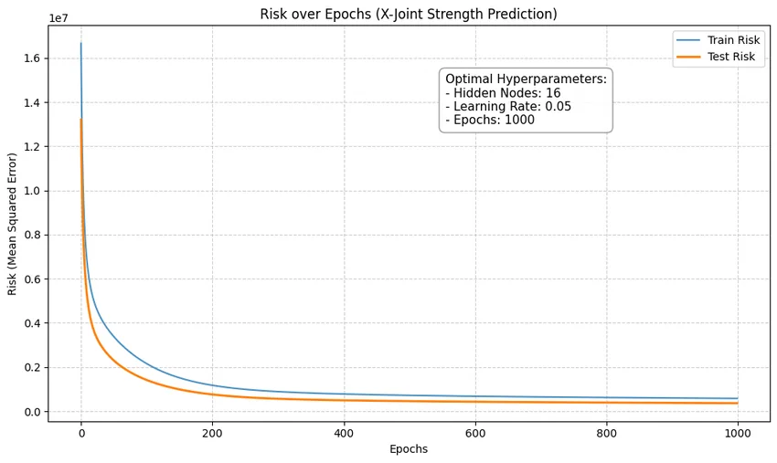
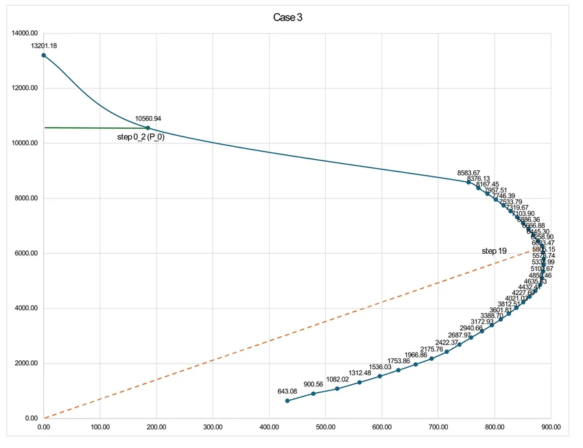

AI·코딩 실습작품 보기스마트건축시스템
학습 조건을 바꾸며 읽는 AI
은닉 노드 수, 학습률, 반복 횟수를 바꾸며 훈련·테스트 오차의 변화를 비교했습니다. 코드를 실행하는 데서 나아가 학습이 진행되는 모습을 그래프로 읽었습니다.
YEAR 04 / INTEGRATION
2026
AI 학습 곡선과 BIM 경로 탐색을 통해 디지털 도구를 익히고, 철근콘크리트 단면의 P–M 상관관계를 분석했습니다. 공간의 경험과 기술의 원리를 함께 살피는 기록입니다.
2026 · 스마트건축시스템 · 철근콘크리트구조설계1
학습 조건에 따른 AI의 변화, 무장애 이동 경로를 위한 팀 프로젝트, 3열 철근 기둥의 단면 해석을 소개합니다.

AI·코딩 실습작품 보기스마트건축시스템
은닉 노드 수, 학습률, 반복 횟수를 바꾸며 훈련·테스트 오차의 변화를 비교했습니다. 코드를 실행하는 데서 나아가 학습이 진행되는 모습을 그래프로 읽었습니다.
 BIM·코딩 팀 프로젝트작품 보기
BIM·코딩 팀 프로젝트작품 보기스마트건축시스템
BIM 공간 정보를 바탕으로 보행 방식에 따른 경로를 구분하고, 휠체어 사용자의 이동 가능성을 시각화하는 프로토타입을 제시했습니다.

구조 계산·비교 분석작품 보기철근콘크리트구조설계1
3열로 배치한 철근콘크리트 기둥 단면에서 축력과 휨모멘트의 관계를 계산했습니다. 콘크리트 강도가 달라질 때 P–M 상관작용곡선이 어떻게 변하는지 비교했습니다.
2026
아직 등록된 작업이 없습니다.